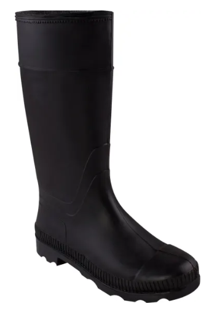
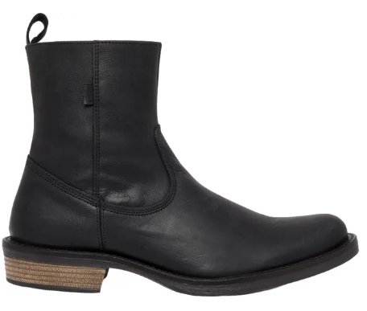
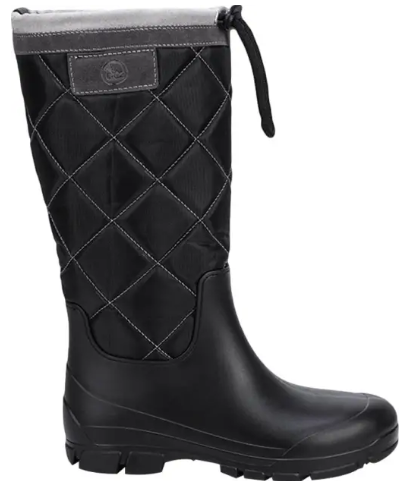
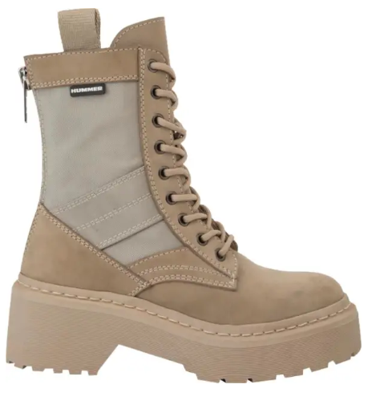
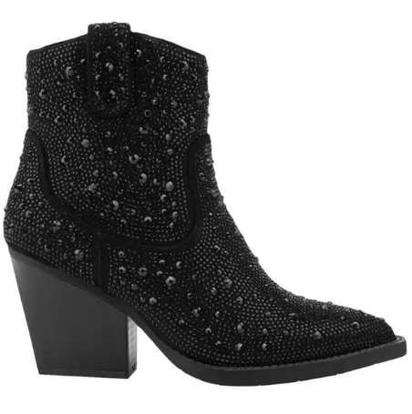

Las botas son un calzado, generalmente de cuero, que resguarda el pie, el tobillo y, a veces, una parte de la pierna. Son muy populares en la actualidad y a continuación aqui hay algunos de los más comprados:
No. Imagen Tamaños Para 1 20 - 26 Caballero 2  18 - 24 Caballero 3  20 - 29 Caballero 4  16 - 22 Dama 5  20 - 25 Dama 6  20 - 24 Dama